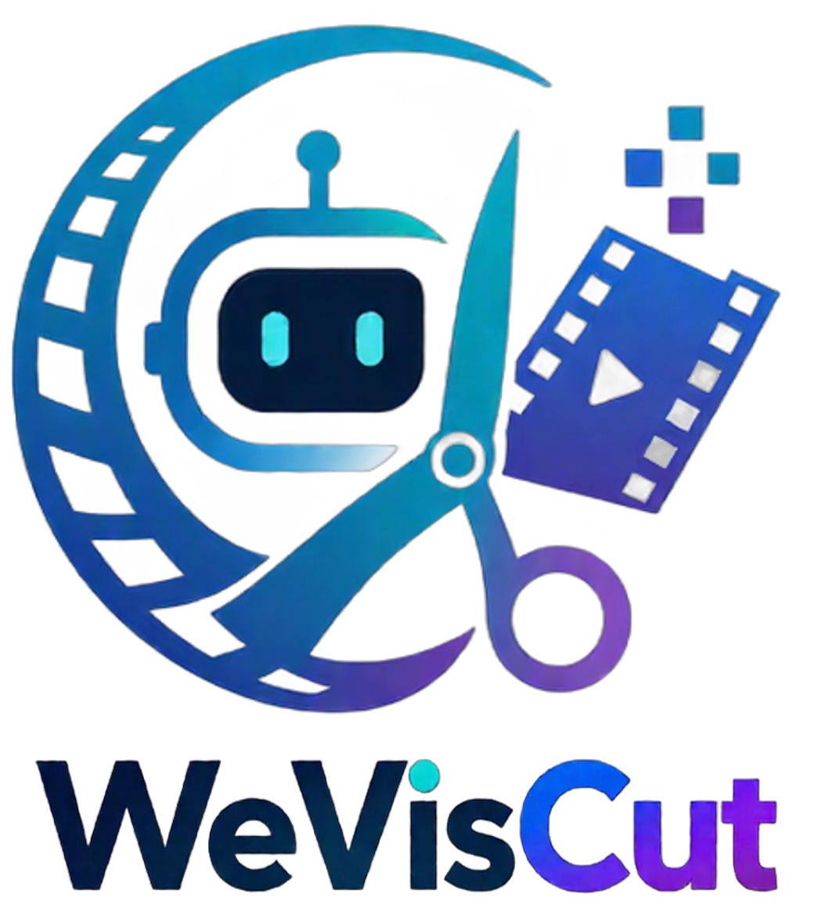
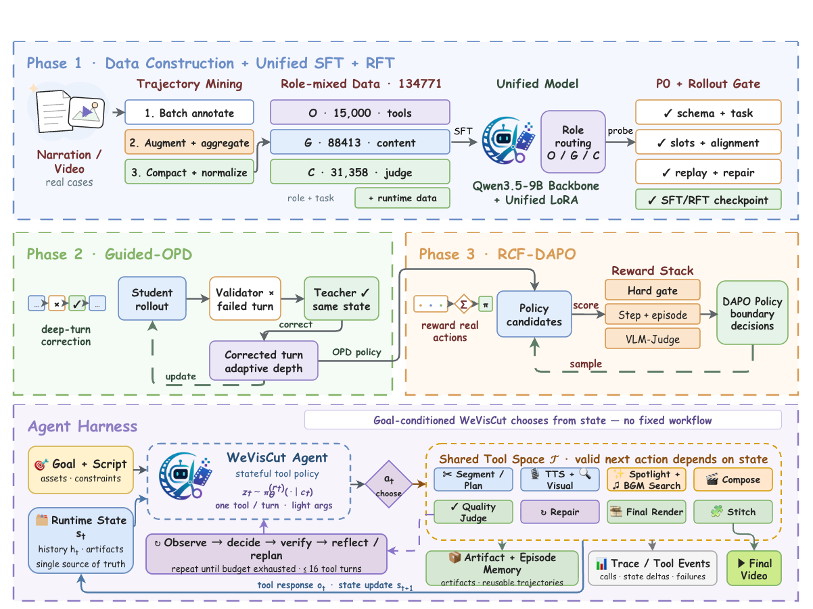

WeVisCut
A Long-Horizon Tool Agent for Turning Knowledge Articles into Edited Videos


English · 中文 · Model · Code · Docs
---
Abstract
WeVisCut is a long-horizon tool agent that turns a knowledge article or narration script into a multi-minute edited video. A single 9B policy (tencent/WeVisCut) reads the current editing state and emits one tool call at a time — segment the article, plan shots, synthesize narration, retrieve footage, fill animated templates, pick BGM, judge, reflect, repair, stitch — for roughly twelve calls per rollout. There is no hardcoded stage machine: the trajectory is decided by the policy, and guardrails only reject illegal calls, never replace them. The released runtime is training-aligned — the same 12 tools and the same state JSON the model saw during training — and ships together with the studio UI and the trajectory-collection pipeline that produced the data.

---
At a glance
| Task | long-form script → multi-minute edited video |
| Policy | one 9B model, one tool call per step (~12 calls / rollout) |
| Action space | 12 editing tools (segment, plan, TTS, retrieval, template, compose, BGM, judge, reflect, probe, stitch) |
| Runtime | studio/ — live timeline, pause / resume, manual & chat editing, per-shot re-render, version rollback |
| Data | data_construct_pipeline/ — long-horizon trajectory annotation (orchestrator / generator / critic) |
| Requirements | Python ≥ 3.11, ~24 GB NVIDIA GPU for bf16 9B (UI-only mode needs none) |
| License | Apache-2.0 (LICENSE) |
---
Contents
- Quick start
- Use the studio
- Data-construct pipeline
- How it works (short)
- Tests (offline, no GPU)
- Citation
- License
---
What you get
- Article → video. Knowledge-style long copy in, a multi-minute cut out (typically ~12 tool calls).
- Studio. Live timeline (chapters, shots, narration, subtitles, footage, templates, BGM, render), pause / resume, then manual or chat edits on the finished project.
- Training-aligned runtime. The model sees the same 12 tools and the same state JSON as in training.
- Data pipeline.
data_construct_pipeline/records the trajectories used to train the policy (orchestrator / generator / critic).
---
Quick start
Need: Python ≥ 3.11, an NVIDIA GPU with ~24 GB for bf16 9B (UI-only: --no-model). Node and ffmpeg are installed by the setup script.
bashgit clone https://github.com/Tencent/WeVisCut.git cd WeVisCut pip install -r requirements.txt # GPU machines: install torch for your CUDA, then pip install -r requirements-gpu.txt bash scripts/setup_external_tools.sh # ffmpeg, Node, renderer, ~1.1 GB pip install -U "huggingface_hub[cli]" hf download tencent/WeVisCut --local-dir checkpoints/weviscut-9b bash run_studio.sh --check # path check, no GPU bash run_studio.sh # default http://<host>:8081/
Weights load in the background (30–60 s). The UI is up immediately. Put the checkpoint somewhere else with export WEVISCUT_MODEL_PATH=/path/to/WeVisCut.
If github.com is blocked, pip install deepagents==0.7.7 instead of the git pin in requirements.txt. The loader needs an ms-swift that registers qwen3_5 (AICUT_MS_SWIFT_PATH if yours does not).
UI-only (no weights): bash run_studio.sh --no-model.
---
Use the studio
- Open
http://<host>:8081/(trustworthy-cut UI:/0907_newvis). - Paste a narration / knowledge script and start. Eight tracks fill as the agent works.
- After a cut: edit a shot (narration, footage, template, BGM) or chat (“change the opening line”, “replace the visual at 0:15”).
- Re-render only the shots you changed. History supports version rollback.
Default footage / BGM is open-web search (asset_retrieval_tool). Point studio_config.yaml at your own HTTP API, a local folder, or a Python plugin — see docs/providers.md. That file is the only config you need to edit.
bashpython3 -m studio.config --summary
---
Data-construct pipeline
data_construct_pipeline/ is how we annotate long-horizon trajectories: one script in → one cut + three role streams (orchestrator, generator, critic). The studio serves the trained policy; this package records the data it was trained on.
bashpip install -e data_construct_pipeline longvideo-polar smoke --pipeline-root . # offline wiring, no GPU longvideo-polar run --script-file /path/to/script.txt --output ./rollouts/demo
A full rollout also needs a served OpenAI-compatible model, TTS, and ffmpeg. Details, batch jobs, and the three-role dumps: the pipeline README.
---
How it works (short)
Each step the policy sees the current editing state and emits one of 12 tools. Guardrails can reject an illegal call; they do not replace it.
| Tool | Role |
|---|---|
Tool_SegmentArticle | Split the article into chapters |
Tool_PlanShots | Plan shots for one chapter |
Tool_GenerateAudio | TTS; locks shot duration |
Tool_RetrieveVisual | Find footage |
Tool_DecorateShot | Template + slots |
Tool_TimelineCompose | Render one shot |
Tool_MusicSearch | BGM playlist |
Tool_TextQuickJudge / Tool_VLMRenderJudge | Quality gates |
Tool_SelfReflect | What to repair next |
Tool_ModalProbe | Service preflight |
Tool_StitchVideo | Concatenate the cut |
Deeper notes: docs/architecture.md. Config reference: docs/configuration.md. External downloads: docs/external_tools.md.
AICutPipeline in prompts and state JSON is the training-time name and is left unchanged on purpose.
---
Tests (offline, no GPU)
bashpython3 tests/test_studio_offline.py python3 -m pytest tests/test_aicut_agent.py tests/test_providers.py tests/test_thinking_parse.py node tests/test_frontend.js
| Symptom | Check |
|---|---|
| Missing modules | requirements.txt / requirements-gpu.txt |
| Model stuck on “loading” | Log; checkpoints/weviscut-9b (or WEVISCUT_MODEL_PATH); GPU visible |
| A tool loops | Frontend terminal — usually TTS / retrieval / renderer |
| Empty thinking panel | model.enable_thinking: true |
| Port in use | bash run_studio.sh --port <free> |
Citation
If you use WeVisCut in your research, please cite:
bibtex@misc{weviscut2026, title = {WeVisCut: A Long-Horizon Tool Agent for Turning Knowledge Articles into Edited Videos}, author = {WeVisCut Team}, organization = {Tencent}, year = {2026}, howpublished = {\url{https://github.com/Tencent/WeVisCut}}, note = {Technical report and code release} }
License
Apache License 2.0 — LICENSE. Third-party runtimes and retrieved media keep their own licences.